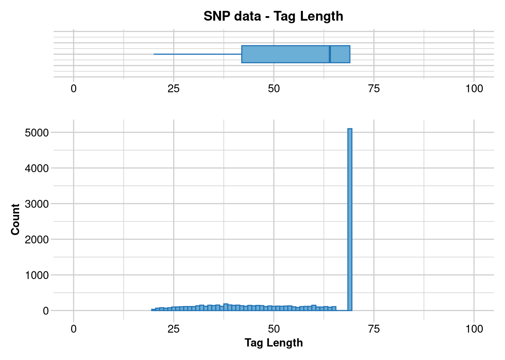
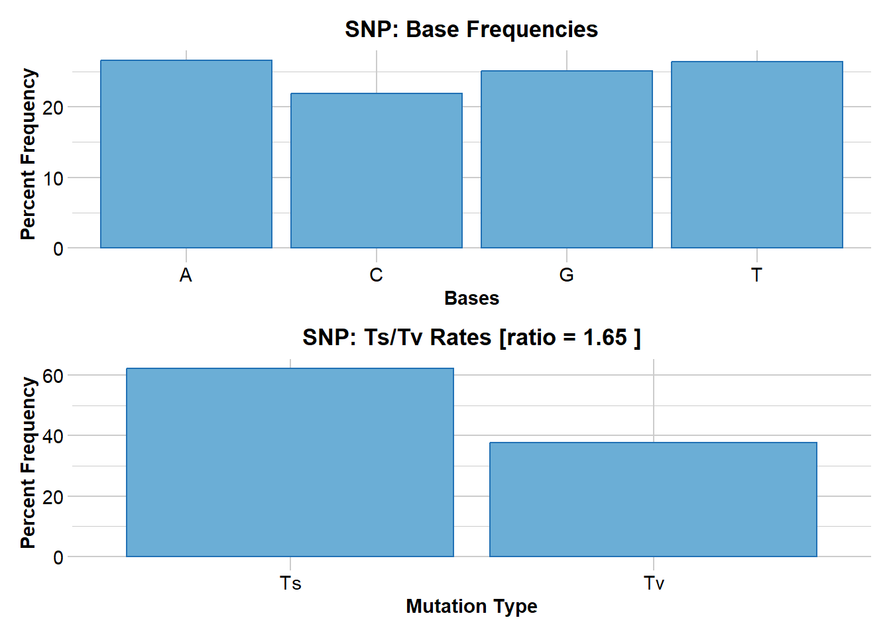

library(dartRverse)9 Lineage Divergence
Session Presenters
Required packages
make sure you have the packages installed, see Install dartRverse
external software
This session will introduce a number of software programs for phylogenetics, for example:
- SVDquarets
- IQTree2
- TreeMix
Introduction
Phylogenetics is the study of the evolutionary relationships among entities whether they be species, lineages within species, genes or proteins. The objective of phylogenetic analysis is to recover the evolutionary history of a target group of organisms.
In the absence of fossil material, or as a complement to the information contained in fossils, phylogenetic relationships are inferred from data associated with heritable traits such DNA sequences, amino acid sequences or morphological attributes. These data are collected from individuals collected from a snapshot in time, the present.
From the patterns so revealed, a defensible phylogenetic history can be inferred. As such, the fodder of phylogenetics is a matrix of individuals by traits (e.g. a genetic locus), with the body of the matrix containing the character state for each individual (e.g. DNA sequence).
The end product of a phylogenetic analysis is a phylogenetic tree which represents the inferred evolutionary relationships – the pattern of ancestry and descent in the form of a bifurcating tree. Unfortunately, the evolutionary history of a group of organisms is not uniquely defined by the data we can collect from the extant terminal entities or fossils. The challenge is to extract the phylogenetic signal in the context of a substantial body of noise. This noise arises from homoplasy, that is, arises by chance under drift or by convergence under selection.
The phylogenetic tree that emerges from the analysis as the best representation of the evolutionary history of the target group can be the one most parsimoniously consistent with available data, or the one most likely given the available data, or the best guess given the available data and some additional relevant prior knowledge.
In this sense, a phylogenetic tree should be viewed as a phylogenetic hypothesis, one to be tested in the light of new evidence as it comes to hand. This mindset encourages collection of additional data to address areas of contention rather than focussing on confirming areas with unqualified support
Phylogenetics and SNPs
SNP markers have traditionally been applied in the domain of population genetics but are increasingly being applied to address phylogenetic hypotheses. SNPs have their strengths and their limitations, especially if applied to resolve deep phylogenies. There is nevertheless utility in the application of phylogenetic analyses for lineages within species or sets of closely related species where the focus may be on identifying lineage diversity or on contributing to decisions on species delimitation. This tutorial has been written on the assumption that the focus is on shallow levels of divergence to complement what can be learned from a population genetics perspective.
So what are the strengths of SNPs?
The obvious value in SNPs is that they are genome-wide and can be considered randomly distributed across the genome. In the case of DArT SNPs, they are sparse and, provided attention is paid to multiple SNPs occurring on the one sequence tag, are unlikely to be linked. There are exceptions to this where there are substantial structural variants (e.g large polymorphic inversions), but these can be identified and accommodated in analyses.
SNPs are less expensive and time-consuming to produce than other approaches to generating phylogenetic data. This means that many more individuals can be included in scoring the data allowing more comprehensive evaluation of within taxon variation and providing a very productive connection between lineage analyses and population genetics. Multiple individuals can be scored from each site across a comprehensive range of sites that capture variation within species or lineages.
So what are the limitations of SNPs?
There is a possibility of ascertainment biases. Were one to establish the SNP panel in a pilot study (as was customary with microsatellites), then rare variants and their associated SNPs are likely to be lost, favouring the inclusion of SNPs that have alleles at intermediate frequencies. This can be managed by combining the development of the SNP panel with the analysis of the full dataset, as is done by DArT.
A second limitation is that missing data is not random. There are two sources of missing data in a SNP dataset. The first includes missing sequence tags that are present in the genome but absent in the dataset because of low read depth. These are random. The second source of missing data arises from mutations in the restriction enzyme sites used to generate the sequence tags – null alleles. Null alleles arise from heritable variation, and so are differentially retained across individuals. The biases that arise from non-random missing data can be managed by filtering heavily on call rate (for both loci and individuals) and, where appropriate, by imputation. This however can favour of SNPs at sites with low mutation rates with attendant ascertainment bias.
A third limitation is that the pipelines for generating SNPs are very selective, in that the focus is on identifying SNPs that are essentially biallelic (single point mutations are not inherently biallelic, so again risking ascertainment bias against sites with low mutation rates) and of course polymorphic. Invariant sequence tags do not contain a SNP and so are discarded in the process. This will have implications not so much for tree topology, but certainly for estimation of branch lengths, dating of nodes and comparability across studies.
A fourth limitation of SNPs is that the sequence tags are very short. In the case of DArT, sequence tags stripped of adaptors range in length from 20 bp to 69 bp. These typically have only one variable site. This together with the sheer number of SNP loci precludes some analysis options such as Austal III and SNAPP that are appropriate for handling gene-tree/species-tree discordance.
The common practice of concatenating the sequence tags for each individual and running a Maximum Likelihood analysis ignores the challenge of gene-tree/species-tree discordance (independent lineage sorting) by “averaging” as does distance analysis. Both SNAPPER and SVDquartets manage these issues appropriately and computational time is unaffected by the number of SNP loci scored.
The bottom line is that there are many considerations governing a phylogenetic analysis using SNP, there is no clear consensus on the most appropriate and practical methods to use in the literature, and everyone will have their own opinion and leanings. Resolving this is well beyond the scope of this session in the workshop. We simply present the options and how to execute them and leave you to weave through the complexities of how to craft a defensible workflow. The review by Leache’ and Oaks (2017, Annual Review of Ecology, Evolution and Systematics 48:69-84) is a good place to start.
This Tutorial
In this tutorial, we explore options for generating phylogenetic trees from SNP data and associated SilicoDArT data. We conveniently sidestep the issues of what is and what is not a species and focus on the evolutionary relationships between lineages (and their descendant clades). Such lineages need to be diagnosable to provide a basis for considering them to be on independent evolutionary trajectories and not subject to horizontal exchange of alleles. This is a requirement enforced by the bifurcating character of phylogenetic trees. Where there is a history of such horizontal exchange, a network is arguably a better model than a bifurcating tree. Similarly, where the individuals that contribute to the data matrix are part of an interbreeding population, the techniques applied fall more into the domain of population genetics or genealogy. The tutorial is structured to first introduce the type of data that is generated during a SNP study using the services of Diversity Arrays Technology Pty Ltd (DArT). We then introduce different approaches to phylogenetic analysis first with distance analyses using Phylip, then Maximum likelihood analyses using IQ-Tree, SVDquartets, and then Bayesian analysis using Snapper in BEAST 2. We finish with the application of parsimony approaches to the binary SilicoDArT data.
Session 1: Datasets
Reading in the SNP data
The SNP dataset used in this tutorial is Example_SNP.Rdata which can be read into RStudio using gl.load(“Example_SNP.Rdata”) or readRDS(“Example_SNP.Rdata”).
gl.set.verbosity(3)Starting gl.set.verbosity
Global verbosity set to: 3
Completed: gl.set.verbosity gl <- readRDS("./data/Example_12.1_SNP.Rdata")Note that this dataset has already been filtered on call rate, reproducibility and read depth.
Examining the Contents
gl /// GENLIGHT OBJECT /////////
// 113 genotypes, 10,529 binary SNPs, size: 73.5 Mb
14053 (1.18 %) missing data
// Basic content
@gen: list of 113 SNPbin
@ploidy: ploidy of each individual (range: 2-2)
// Optional content
@ind.names: 113 individual labels
@loc.names: 10529 locus labels
@loc.all: 10529 alleles
@position: integer storing positions of the SNPs
@pop: population of each individual (group size range: 10-12)
@other: a list containing: ind.metrics loc.metrics history loc.metrics.flags verbose latlon Simply typing the name of the genlight object provides a substantial amount of information. We can see that there are 113 individuals scored for 10,529 SNP loci, all but 1.18% having been successfully called./ We could have used the adegenet accessors to pull this information, for example,
nLoc(gl)[1] 10529nInd(gl)[1] 113nPop(gl)[1] 11and can in addition, list the individual names and population names
indNames(gl)[1:10] [1] "UC_0126" "HBS_100900" "HBS_100901" "HBS_100902" "HBS_100922"
[6] "UC_0126_1" "HBS_100745" "AA033593" "AA033609" "HBS_101033"popNames(gl) [1] "signata" "farnorth" "krefftii" "nigra" "gunabarra"
[6] "emmottii" "macquarii" "subglobosa" "worrelli" "tanybaraga"
[11] "victoriae" Samples sizes can be obtained using
table(pop(gl))
signata farnorth krefftii nigra gunabarra emmottii macquarii
11 10 10 10 10 10 10
subglobosa worrelli tanybaraga victoriae
10 10 12 10 Examining Selected Locus Metrics
You can interrogate the locus metrics dataframe associated with the genotype data by accessing various variable in the loc.metrics dataframe associated with the genlight object gl.
gl@other$loc.metrics$TrimmedSequence[1:10] [1] TGCAGGTTCTTTTCCTTTGGGAGCCTGTGACAGAATGGGTTTTCAGGGACAAAGAAAAAGCTTCTCTGA
[2] TGCAGATATCAGTAAAACCGGAATGTAAAAACAAATATAATCTGAGTTTCATTATCAGTCCCCCATGAT
[3] TGCAGGAATTTGTTAGTCTTTAAGGTGCTACAGGACTCTCGGTGTTTGGACTCTATGAAATGCTTGTAA
[4] TGCAGTCTGATGGAGACACATGGTGAGTCCCCACTATCAAACAGAATTCATAAGTTGCATG
[5] TGCAGGCCCTGCTCAGTTAGGCATG
[6] TGCAGAATGGCAATAGCTATTCCAGTCAATCTCTCCATGTTCCAGGCCAATGTTCCCATCTTATGGCAT
[7] TGCAGAGACAAAAGACCCTCAGCATG
[8] TGCAGGTAAAGTCTTGCTCAGCCATTGCAAGCCCACACTAGAGCATG
[9] TGCAGGGCCTGATTGGGTCAGGGTGCTCAGAGCATG
[10] TGCAGTAATTATACGGAAGAAAAAATCCATTAAATAAAGTATTGTCTTATGCACTCTGATACTTCTGGA
162884 Levels: TGCAGAAAAAAAAACAATGTGCCAGTTCCCAAGTCTTTTCTGTCCAGATTCCCAGAATTCCCAGAGAGT ...Here we are checking to see if the data contain the sequences trimmed of adaptors which we might want to use for phylogenetic analysis. Note that the sequence tags are of variable length and indeed range from 20 bp to 69 bp. We can examine the distribution of tag lengths using
gl.report.taglength(gl)Starting gl.report.taglength
Processing genlight object with SNP data
Reporting Tag Length
No. of loci = 10529
No. of individuals = 113
Minimum : 20
1st quantile : 42
Median : 64
Mean : 55.68506
3r quantile : 69
Maximum : 69
Missing Rate Overall: 0.01 
Quantile Threshold Retained Percent Filtered Percent
1 100% 69 5103 48.5 5426 51.5
2 95% 69 5103 48.5 5426 51.5
3 90% 69 5103 48.5 5426 51.5
4 85% 69 5103 48.5 5426 51.5
5 80% 69 5103 48.5 5426 51.5
6 75% 69 5103 48.5 5426 51.5
7 70% 69 5103 48.5 5426 51.5
8 65% 69 5103 48.5 5426 51.5
9 60% 69 5103 48.5 5426 51.5
10 55% 69 5103 48.5 5426 51.5
11 50% 64 5304 50.4 5225 49.6
12 45% 59 5876 55.8 4653 44.2
13 40% 54 6424 61.0 4105 39.0
14 35% 50 6911 65.6 3618 34.4
15 30% 46 7432 70.6 3097 29.4
16 25% 42 7964 75.6 2565 24.4
17 20% 38 8604 81.7 1925 18.3
18 15% 35 9017 85.6 1512 14.4
19 10% 31 9568 90.9 961 9.1
20 5% 27 10008 95.1 521 4.9
21 0% 20 10529 100.0 0 0.0
Completed: gl.report.taglength This information is important because some phylogenetic techniques are brutal in their treatment of missing data. To minimize the impact of this, it might be necessary to filter loci on tag length prior to such analyses. Another locus metric that is of interest to us is the SNP position in the sequence tag, incase we want to look at the details of the transition or transversion mutation.
gl@other$loc.metrics$SnpPosition[1:10] [1] 16 18 40 21 9 7 11 24 19 24 #OR
gl@position[1:10] [1] 16 18 40 21 9 7 11 24 19 24The mutations in each sequence tag can be examined with
gl@other$loc.metrics$SNP[1:10] [1] 16:C>T 18:A>C 40:A>G 21:A>G 9:C>T 7:C>T 11:C>A 24:C>T 19:G>A 24:T>A
768 Levels: 10:A>C 10:A>G 10:A>T 10:C>A 10:C>G 10:C>T 10:G>A 10:G>C ... 9:T>GNote that a sequence tag can have more than one SNP mutation, and that each of these SNP markers is represented in the dataset as a separate line entry. All but one SNP mutation can be removed from the dataset using gl.filter.secondaries(gl). This was done in preparing this example dataset. Base frequencies and transition/transversion (Ts/Tv) ratios can be obtained with
gl.report.bases(gl)Starting gl.report.bases
Processing genlight object with SNP data
Counting the bases
Counting Transitions and Transversions
Average trimmed sequence length: 55.7 ( 20 to 69 )
Total number of trimmed sequences: 10529
Base frequencies (%)
A: 26.59
G: 25.12
T: 26.39
C: 21.9
Transitions : 62.27
Transversions: 37.73
ts/tv ratio: 1.6501 
Completed: gl.report.bases
Where have we come?
 The above Session was designed to give you a very brief overview to the characteristics of a SNP dataset as implemented in the dartR package. Having completed this Session, you should now be familiar the following concepts.
The above Session was designed to give you a very brief overview to the characteristics of a SNP dataset as implemented in the dartR package. Having completed this Session, you should now be familiar the following concepts.
- The means by which SNP genotypes are stored in a genlight object in preparation for phylogenetic analysis.
- The distinction between SNP genotype datasets and SilicoDArT datasets.
- Methods for interrogating the contents of a genlight object, including the associated locus metrics of relevance to phylogenetics.
- How to access and scrutinize the tag sequences, the position of the SNPs in each sequence tag, the mutational change for each SNP and to calculate base frequencies and ts/tv ratios.
Session 2: Distance Phylogenetics
Distance methods work with a matrix of genetic distances calculated for individuals or populations. In the case of SNP markers, such a distance matrix could be calculated directly from the SNP scores. There are a number of considerations that complicate a phylogenetic analysis based on distances.
- What distance measure to select, taking into account different rates of mutation at different sites (e.g rates of transition mutations as opposed to transversion mutations).
- If and how to manage missing sequence in the aligned set of sequence tags, given that the sequence tags range in length from 20 to 69 (for DArT data).
- What algorithm is appropriate for extracting the best supported tree (Neighbour-joining, Fitch-Margoliash, Minimum Evolution).
- Choosing an outgroup to provide the phylogeny with a defensible root.
Model Selection
There is a vast body of theory directed at selecting an appropriate substitution model of evolution, most electing to optimize the model to the limited data available for analyses (that is, the statistical sample). An alternative is to look to the literature and select the substitution model that has the greatest consensus across a range of studies (arguably optimized for the statistical population from which the statistical sample is drawn). Options for substitution model selection are provided in the documentation supporting the {ape} package in R. We leave model selection to another day (refer to software options like ModelTest – Posada and Crandall, 2001). Dr Google and Wikipedia (under Computational Phylogenetics) provide some good general advice. Some methods such as IQ-Tree have inbuilt options to estimate and choose the most appropriate model. In this tutorial, we will use here an evolutionary model that is satisfactory for most purposes, the K80 model devised by Kimura (1980), sometimes referred to as Kimura’s 2-parameters distance which adopts different rates transitions (A <-> G, C <-> T) and transversions (A <-> C, A <-> T, C <-> G, G <-> T) and takes into account variable base (A,C,G,T) frequencies.
Missing Sequence (NNNNN)
The method used to convert the trimmed sequences in the dartR genlight object to a form amenable to distance analysis is
gl2fasta(gl,outfile="Example1.fas",outpath = './data/')Starting gl2fasta
Processing genlight object with SNP data
Assigning ambiguity codes to heterozygote SNPs, concatenating trimmed sequence
Removing loci for which SNP position is outside the length of the trimmed sequences
Generating haplotypes ... This may take some time
Completed: gl2fasta NULLThis produces a fastA file of concatenated aligned sequence tags padded where necessary with NNNNNs (Figure 2). Because the sequence tags can vary in length considerably, the substantial addition of Ns can cause problems for distance methods. Some will delete all point information where there is an N for one individual. Filtering on tag length to minimize the impact of this might be considered.
gl <- gl.filter.taglength(gl, lower=40)Starting gl.filter.taglength
Processing genlight object with SNP data
Initial no. of loci = 10529
Removing loci with taglength between 40 and 69
No. of loci deleted = 2268
Summary of filtered dataset
Sequence Tag Length between 40 and 69
No. of loci: 8261
No. of individuals: 113
No. of populations: 11
Completed: gl.filter.taglength Alternatively, the impact of missing data can be minimized by using pairwise calculations where the distance algorithm allows this. We will be disregarding this issue for the sake of the exercise.
Tree-building Algorithm
Neighbour-joining
A common method of building a phylogenetic tree from distances uses the Neighbour-joining algorithm (Saitou and Nei, 1987). It is a fast agglomerative clustering method which starts with the pair of taxa with the smallest distance between them, joins them, and then progressively adds nearest neighbours. Thus, the optimization is local not global and the final solution is influenced by the order of similarities between taxa.
Fitch-Margoliash
The Fitch–Margoliash method (F-M) matches the tree with the input distances using weighted least squares, where more similar distances are given greater weight than less similar distances. Thus, the optimization is global not local. Exhaustive searches for the best tree are computationally limited as the number of taxa increases, so heuristic search methods are used to find the best tree.
Both neighbour-joining and Fitch-Margoliash methods are good for examining relationships among your terminal individuals or groups as a prelude to a more sophisticated analysis.
Outgroup Selection
Depending on the application, the phylogeny may need to be rooted. This is conventionally done by choosing an outgroup taxon, one that unambiguously lies outside the clade comprising the taxa of primary interest.
This can be problematic in SNP studies because they work primarily with closely related taxa, the relationships among all of them being of primary interest and no clear taxon that unambiguously lies outside the focal taxa based on a priori considerations. Typically, any clear candidate for an outgroup taxon belongs to a sister species and its inclusion greatly increases the number of null alleles with marginal benefit in terms of numbers of phylogenetically informative SNPs (those with alleles shared between outgroup and some ingroup taxa).
Alternative methods of rooting the tree based on branch length (mid-point rooting) or a priori knowledge of the taxa may be required.
Note that whether the tree is rooted or not rooted does not influence the topology of the tree arising from any of the analyses.
Implementation in dartR
The R package {dartR} is essentially a suite of R scripts, managed on CRAN, that provides a link between SNP data generated by DArT (or using ddRAD) and a range of analyses. Where capability is already available to the community, dartR will provide wrappers for existing R scripts developed by other sources, or will provide a script to export data in a form that can be used by other programs ourside the R environment.
Distance phylogeny in dartR is implemented by drawing upon the capabilities of R package {ape} and program Phylip. The dartR functions to use are
d <- gl.dist.phylo(gl,subst.model="F81")
gl.tree.fitch(D=d,x=gl,bstrap=100, )which together allow you to specify the substitution model, the algorithm for tree building, elect to filter out tag lengths below a given threshold and specify an outgroup taxon.
A neighbour joining tree can be generated with
gl.tree.nj(d)but bootstrapping is not available as an option.
Worked Example: Distance Trees
Preparation
To start you need to assign the working directory to the path that contains the datafile Example_SNP.Rdata. Also make a note of the directory that holds the Phylip executables, for example, “D:/workspace/R/phylip-3.695/exe”.
Read in the data using
gl <- gl.load("Example_SNP.Rdata")
# Consider if you want to filter on taglength, say
gl <- gl.filter.taglength(gl,lower=69, verbose=3)Compute distance matrix
Select a substitution model, in this case F81 (Felsenstein (1981) which is a generalized the Jukes–Cantor model that distinguishes different substitution rates for transitions and transversions and relaxes the assumption of equal base frequencies.
dd <-gl.dist.phylo(gl,by.pop=TRUE, subst.model="F81",verbose=3)
as.matrix(dd)
gl.tree.fitch(D=dd,x=gl, phylip.path="D:/workspace/R/phylip-3.695/exe",
outgroup="macquarii", verbose=3)Bootstrapping
We now bootstrap the Fitch-Margoliash tree which is quite computationally expensive.
gl.tree.fitch(D=dd,x=gl, phylip.path="D:/workspace/R/phylip-3.695/exe",
outgroup="macquarii", bstrap=100, verbose=3)
Where have we come?
The above Session was designed to give you an overview on the application of distance methods in phylogeny using a SNP dataset as implemented in the dartR package. Having completed this Session, you should now be familiar the following concepts.
- The considerations to make in constructing a distance matrix from a SNP dataset, including decisions on the nucleotide substitution model and the mode of deletion of missing values.
- Familiarity with two options for phylogenetic tree construction, the Neighbour-joining method and the Fitch-Margoliash method.
- Options for the analysis and mode of display.
Phylogenetics Tutorial
This was just a taste of what the tutorial has to offer, check it out below.
Further Study
Also check out the fixed differences tutorial